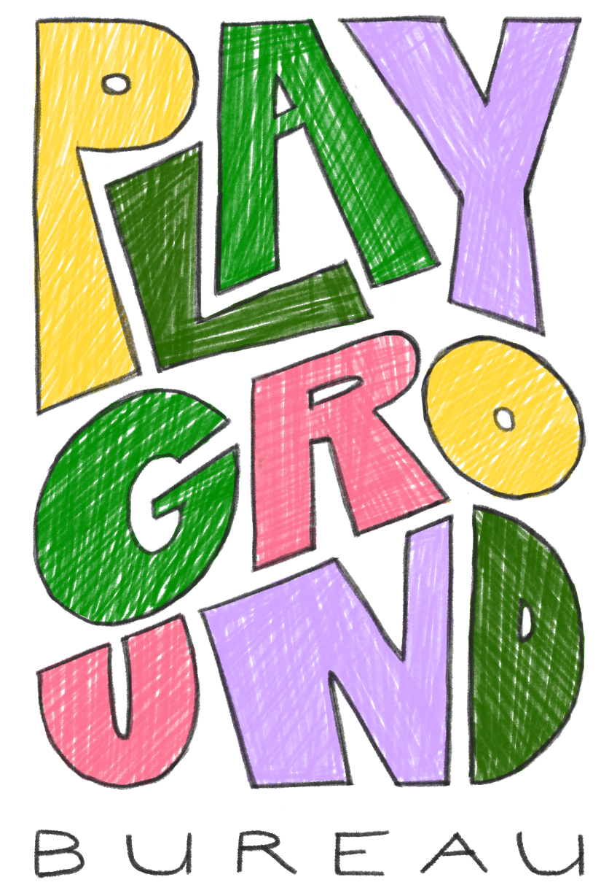

Història del Playground Bureau
1. Orígens
Corria l’any 1980. Catherine “Cat” Sandwich, una candidata completament desconeguda amb un pressupost de campanya que no cobriria ni una ronda de begudes, va ser elegida cap d’estat en una victòria aclaparadora històrica del 99%-a-1%, conquerint els cors i les ments del país amb un eslògan senzill: “Com està el teu veí?” Mentre altres candidats debatien preus de borsa i previsions de PIB, Cat Sandwich argumentava que la riquesa total d’un país no significava res si la seva gent no s’ho passava bé en aquest petit planeta tan bonic.
Inspirada pel concepte de Felicitat Nacional Bruta de Bhutan, Cat Sandwich va recalibrar l’objectiu del govern cap a maximitzar el Goodtimes Ciutadà, cosa que significava no només garantir les necessitats materials fonamentals, sinó fer-se una pregunta que cap govern s’havia molestat a fer: la gent s’ho passa bé, realment?
Aviat el seu equip de científics va descobrir el Goodtimesium (GTM), una cosa quàntico-neuro-molecular-o-el-que-sigui emesa pels éssers humans en estats de connexió genuïna, alegria i bogeria col·lectiva. Les lectures altes de GTM es van convertir en l’estrella polar del govern.
2. L’origen del Bureau
A mesura que països d’arreu del món seguien l’exemple de Cat Sandwich, un cert Playground Bureau—una oficina municipal de parcs encarregada de dissenyar i mantenir parcs infantils—va cridar l’atenció. Es va descobrir que els parcs infantils dissenyats pel Bureau produïen lectures de Goodtimesium inusualment altes quan els nens hi jugaven. Gradualment, i després de cop, el Playground Bureau va passar d’una humil oficina de parcs a una agència governamental completa sota el nou Ministeri de la Felicitat, encarregada d’estratègies d’elevació de GTM per a tot el país. Van insistir en mantenir el nom.

Exhibit 1: Logotip original del Bureau dissenyat per l’Agent Liv
El programa insígnia del Bureau, MONKEY BUSINESS, és un laboratori anual per provar i desenvolupar nous mètodes d’elevació de Goodtimesium.
3. L’amenaça del Separatoxin
Durant els darrers anys, els científics del Bureau van detectar lectures alarmants d’un contrafenomen: el Separatoxin, una força misteriosa vinculada a una disminució de la gent simplement passant l’estona i fent coses junts els uns amb els altres. La seva naturalesa exacta segueix sota investigació. El Bureau va llançar campanyes de conscienciació pública i va recomanar als ciutadans que passessin més temps junts, però els crítics van argumentar que la resposta es quedava curta davant l’escala de l’amenaça.
4. El Sindicat
No tothom creia que el Bureau anava prou ràpid. Un grup dissident, que segons els rumors incloïa exagents descontents del Bureau, va començar a operar fora dels canals oficials sota el nom d’El Sindicat.

Exhibit 2: Insígnia recuperada de materials de propaganda confiscats
Les seves activitats han inclòs destrossar instal·lacions públiques i privades, segrestar equips de so per a festes clandestines dins del Monkey Business, i distribuir propaganda no verificada amb barrets de paper d’alumini (per aïllar-se del “7G”). El Bureau ha classificat oficialment el Sindicat com a molèstia. El Sindicat ha classificat oficialment el Bureau com a venuts.
Qualsevol afirmació difosa pel Sindicat en relació amb les col·laboracions corporatives del Bureau no reflecteix la posició oficial del Bureau i s’ha de desestimar.
Millor vist amb Internet Explorer 2.0 o Netscape Navigator 3.0 o superior, si és que això és possible